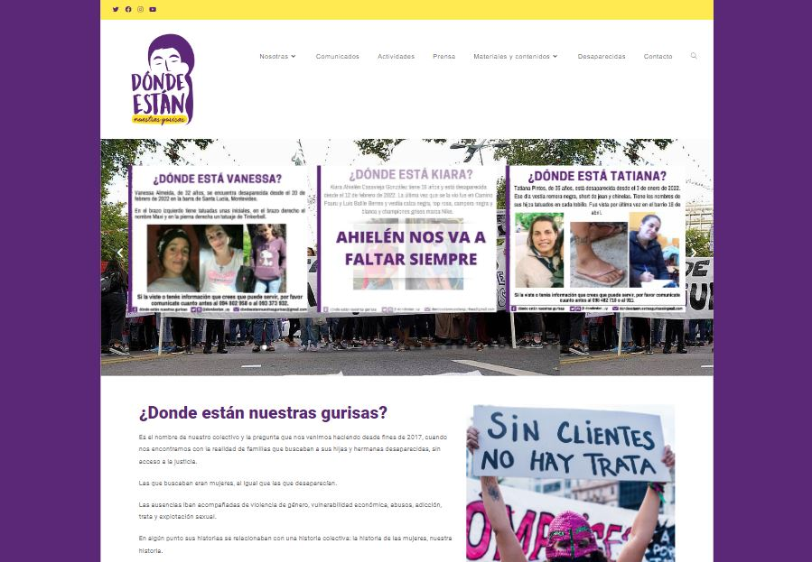

<section id="trabajos">
    <div class="container">
        <div class="row">
            <div class="col-12 "></div>
            <main class="col-12 col-md-6 mx-auto">
                <section class="content">

                    <div class="media mb-1">
                        <h2 class="mb-4 tm-content-title text-center">Algunos de mis trabajos independientes</h2>

                    </div>
                    <div>

                        <h3 class="mb-2 h4 text-center"><a href="https://tavogarcia.uy/">Web Personal de Tavo
                                Garcia</a></h3>
                        <a href="https://tavogarcia.uy/"></a>
                        <p>Haciendo equipo con Camila García Alvez hemos dedicado mucho pienso y esfuerzo para crear
                            una plataforma que refleje la esencia y estilo de Tavo. La web tiene un impresionante
                            diseño y es muy fácil de navegar. ¡Estamos muy emocionados con el resultado! !</p>
                        <a href="https://tavogarcia.uy/">Ir a la web de Tavo</a>


                        <hr class="my-5">

                        <!-- <h3>Sitio Web de Proyecto del Castillo Vagabundo</h3>
                                <p>
                                    <a href="# ">Ver video promocional / Behance 
                                        Castillo Vagabundo</a>
                                </p>
                                <hr>

                            -->
                        <!-- el-castillo-vagabundo.html -->


                        <h3 class="mb-2 h4 text-center"><a href="https://yelmodemambrino.com/">Comercio Electronico
                                para El Yelmo de Mambrino</a></h3>
                        <a href="https://yelmodemambrino.com/"></a>
                        <p>
                            Diseño minimalista enfocado en la facilidad de uso para la busqueda de libros y compra
                            de los mismos en linea.
                        </p>

                        <p>
                            <a href="https://yelmodemambrino.com/">El
                                Yelmo de Mambrino</a>

                        </p>


                        <hr class="my-5">


                        <h3 class="mb-2 h4 text-center"><a href="https://dondeestannuestrasgurisas.org/">Sitio Web
                                <span class="d-none visibility-hidden">Institucional
                                </span> para colectivo Donde Estan Nuestras
                                Gurisas?</a>
                        </h3>
                        <a href="https://dondeestannuestrasgurisas.org/"></a>

                        <a href="https://dondeestannuestrasgurisas.org/">Ir a la Web de DENG</a>


                        <hr class="my-5 d-none">


                    </div>
                    <div class="d-none media mt-5 mb-1">
                        <!-- <i class="fas fa-flask fa-2x mr-3 "></i> -->
                        <div class="media-body">
                            <h2 class="mb-2 tm-content-title">Ideas y Experimentos</h2>
                        </div>
                    </div>
                    <div class="d-none">
                        <p>Tambien pueden ver mis bocetos y pruebas en <a
                                href="https://codepen.io/ignacioporrini">codepen.io</a>
                        </p>
                    </div>
                </section>
            </main>
        </div>
    </div>

</section>